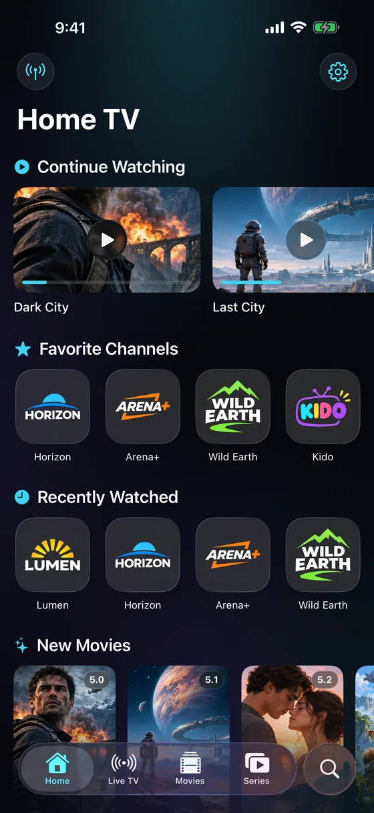
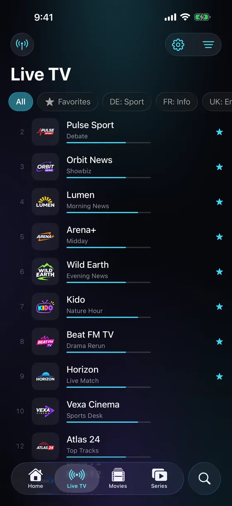
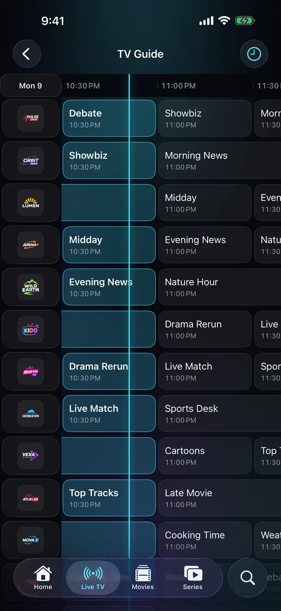
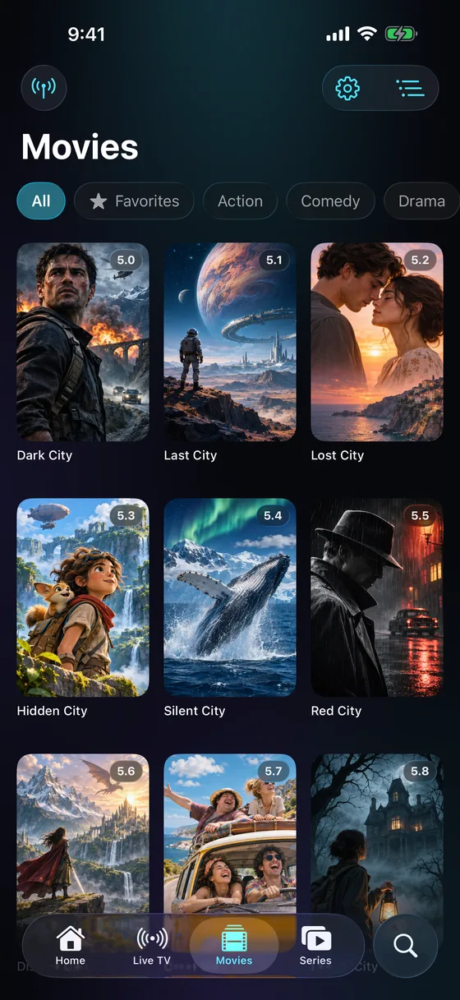
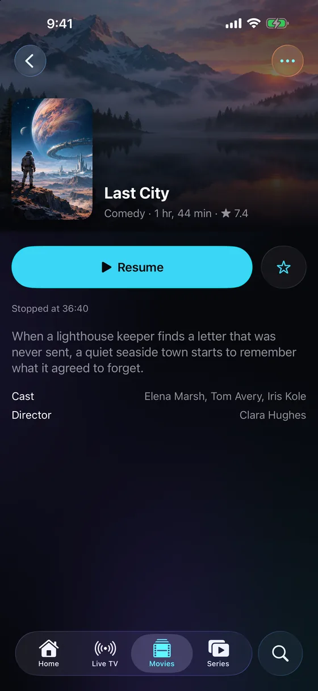
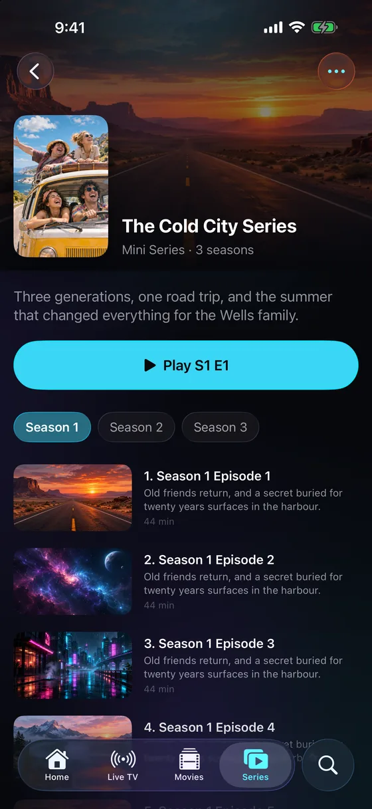
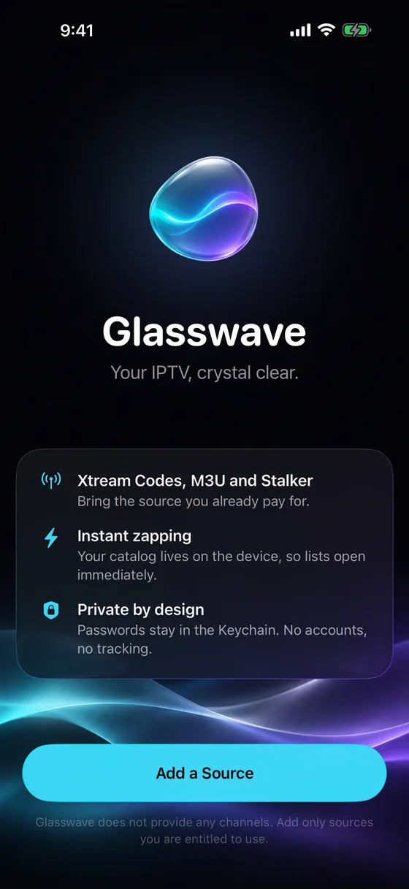
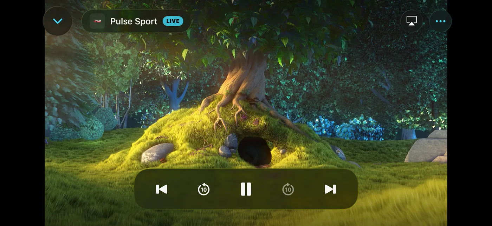
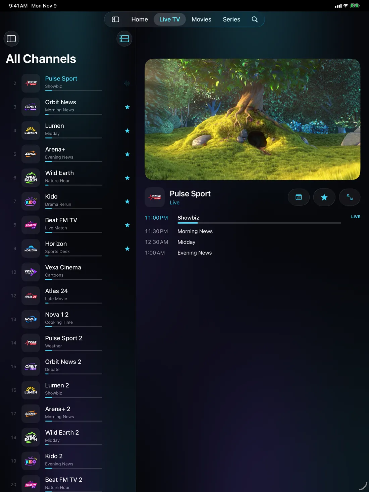

Your IPTV,
crystal clear.
A fast, native player for the sources you already have. Xtream Codes, M3U and Stalker, with a full TV guide, all wrapped in Liquid Glass.
Free · iOS 26 or later · No account needed

Works with what you already have
Add a source once. Channels, movies and series are saved on your device and open instantly afterwards.
- Xtream Codes
- M3U & M3U8 playlists
- Playlist files
- Stalker / Ministra portals
- XMLTV guides (.xml, .gz)






Every channel, with what's on now.
Channel lists open instantly from a local catalog, and each one shows the programme that is on with its progress.
- Swipe in the player to change channel
- Pause and rewind live TV with timeshift
- Automatic reconnect when a stream drops
- Three panes on iPad: categories, channels and a live preview
A guide you'll actually use.
Load XMLTV guides of any size, including gzip files, and browse them as a grid or channel by channel.
- Reminders for upcoming programmes
- Catch-up for past programmes when your provider supports it
- Fix a channel's guide match and time shift by hand
Pick up right where you left off.
Your progress is saved for every movie and episode, and the next episode is one tap away.
- Seasons and episodes, with continue watching
- Optional TMDB artwork and details with your own key
- Search across live TV, movies and series
Plays everything.
MPEG-TS, HLS, MKV, AC3 and HEVC with hardware decoding. Audio and subtitle tracks, subtitle search, delay, speed, aspect ratio and a sleep timer.

Made for the big screen, too.
On iPad, Glasswave uses the space: a sidebar, live TV side by side with a preview, and a roomy guide. Picture in Picture and AirPlay come along for HLS streams.

Your list, your way.
Favorites & groups
Star channels and build your own groups across sources.
Tidy up
Hide, rename and reorder channels and categories.
Parental PIN
Lock adult categories behind a PIN of your choice.
Encrypted backups
Move your setup to a new device with a password-protected file.
Picture in Picture
Keep watching while you use other apps, and send streams to your TV with AirPlay.
English & Turkish
Fully translated into Turkish, with Turkish-aware search.
No accounts. No tracking. No data collected.
Glasswave talks only to the providers you add. Passwords and MAC addresses stay in your device's Keychain, and nothing is ever sent to us.
Read the privacy policyTry it with our demo playlist
In Glasswave, tap Add a Source, choose M3U and paste this address. It lists openly licensed test streams such as Big Buck Bunny, Sintel and Apple's HLS samples.
https://enesbsafak.github.io/glasswave-site/demo/playlist.m3u
Questions
Does Glasswave include channels?
No. Glasswave is a player only and comes without any channels, playlists or subscriptions. Add a source you are entitled to use.
Which devices are supported?
iPhone and iPad with iOS 26 or later.
Can I watch on my TV?
Yes, with AirPlay. Turn on Native player for HLS in Settings → Playback and use HLS streams.
A stream says "The provider is busy".
Many subscriptions allow one stream at a time. Close the stream on your other devices; Glasswave tries again by itself.
More answers on the support page.
Glasswave does not provide any channels, playlists or subscriptions. It is a player for content you have the right to watch.